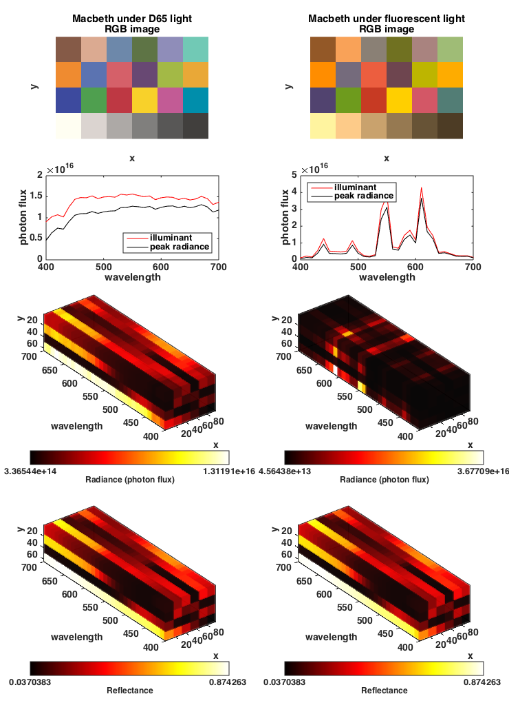

Contents
- Function implementing the isetbio validation code
- Initialize ISETBIO
- Generate Macbeth scene with D65 illuminant
- Extract various spectral parameters of the scene
- Generate an RGB rendition of the scene
- Compute scene reflectance functions at all (row,col) positions
- Generate new illuminant: fluorescent light with a luminance equal to that of D65 above
- Re-illuminate scene using the new illuminant
- Extract various spectral parameters of the scene
- Generate an RGB rendition of the scene
- Compute scene reflectance functions at all (row,col) positions
- Internal validation
- Plotting
- Helper plotting functions
function varargout = v_sceneReIllumination(varargin) % % Validate changes in scene illuminant. % % Start with a Macbeth image illuminated under a D65 illuminant. % Then re-illuminate using a flusorescent illuminant of equal luminance. % varargout = UnitTest.runValidationRun(@ValidationFunction, nargout, varargin); end
Function implementing the isetbio validation code
function ValidationFunction(runTimeParams)
Initialize ISETBIO
s_initISET;
Generate Macbeth scene with D65 illuminant
scene = sceneCreate('macbethd65');
Extract various spectral parameters of the scene
illuminantPhotons = sceneGet(scene, 'illuminantPhotons'); peakRadiance = sceneGet(scene, 'peakRadiance'); photonRadianceMap = sceneGet(scene, 'photons'); wavelengthSampling = sceneGet(scene, 'wave'); illuminantXYZ = sceneGet(scene,'illuminant xyz');
Generate an RGB rendition of the scene
rgbImage = sceneGet(scene,'rgb image');
Compute scene reflectance functions at all (row,col) positions
samplingGridPositions = sceneGet(scene,'size'); reflectanceMap = zeros(size(photonRadianceMap)); for row = 1:samplingGridPositions(1) for col = 1:samplingGridPositions(2) reflectanceMap(row,col,:) = squeeze(photonRadianceMap(row,col,:)) ./ illuminantPhotons; end end % keep a copy of the original scene to save later on originalScene = scene;
Generate new illuminant: fluorescent light with a luminance equal to that of D65 above
il = illuminantCreate('fluorescent',[],illuminantXYZ(2)); illuminantEnergy = illuminantGet(il,'energy');
Re-illuminate scene using the new illuminant
scene = sceneAdjustIlluminant(scene,illuminantEnergy);
Extract various spectral parameters of the scene
illuminantPhotons2 = sceneGet(scene, 'illuminantPhotons'); peakRadiance2 = sceneGet(scene, 'peakRadiance'); photonRadianceMap2 = sceneGet(scene, 'photons');
Generate an RGB rendition of the scene
rgbImage2 = sceneGet(scene,'rgb image');
Compute scene reflectance functions at all (row,col) positions
reflectanceMap2 = zeros(size(photonRadianceMap2));
for row = 1:samplingGridPositions(1)
for col = 1:samplingGridPositions(2)
reflectanceMap2(row,col,:) = squeeze(photonRadianceMap2(row,col,:)) ./ illuminantPhotons2;
end
end
Internal validation
Reflectance range is [0 .. 1]. Specify tolerance as 0.1%
tolerance = 1E-6;
quantityOfInterest = reflectanceMap2(:)-reflectanceMap(:);
UnitTest.assertIsZero(quantityOfInterest,'Scene reflectance before and after re-illumination',tolerance);
% append to validationData
UnitTest.validationData('originalScene', originalScene);
UnitTest.validationData('scene', scene);
Plotting
if (runTimeParams.generatePlots) plotResults(wavelengthSampling, ... rgbImage, illuminantPhotons, peakRadiance, photonRadianceMap, reflectanceMap, ... rgbImage2, illuminantPhotons2, peakRadiance2, photonRadianceMap2, reflectanceMap2); end
end
Helper plotting functions
function plotResults(wavelengthSampling, ... rgbImage, illuminantPhotons, peakRadiance, photonRadianceMap, reflectanceMap, ... rgbImage2, illuminantPhotons2, peakRadiance2, photonRadianceMap2, reflectanceMap2); h = figure(500); clf; set(h, 'Position', [100 100 740 1020]); subplot('Position', [0.11 0.8 0.30 0.15]); imshow(rgbImage); xlabel('x'); ylabel('y'); title(sprintf('Macbeth under D65 light\nRGB image')); set(gca, 'FontName', 'Helvetica', 'FontSize', 14, 'FontWeight', 'bold'); subplot('Position', [0.09 0.63 0.34 0.12]); hold on; plot(wavelengthSampling, illuminantPhotons, 'r-'); plot(wavelengthSampling, peakRadiance, 'k-'); xlabel('wavelength'); ylabel('photon flux'); legend('illuminant', 'peak radiance', 'Location', 'SouthEast'); box on; set(gca, 'FontName', 'Helvetica', 'FontSize', 14, 'FontWeight', 'bold'); wavelengthSubSamplingInterval = 1; subplot('Position', [0.06 0.32 0.39 0.26]); plotRadianceMap(photonRadianceMap, wavelengthSampling, wavelengthSubSamplingInterval, 'Radiance (photon flux)'); set(gca, 'FontName', 'Helvetica', 'FontSize', 14, 'FontWeight', 'bold'); subplot('Position', [0.06 0.02 0.39 0.26]); plotRadianceMap(reflectanceMap, wavelengthSampling, wavelengthSubSamplingInterval, 'Reflectance') set(gca, 'FontName', 'Helvetica', 'FontSize', 14, 'FontWeight', 'bold'); % Now, plot re-illuminated scene data subplot('Position', [0.11+0.5 0.8 0.30 0.15]); imshow(rgbImage2); xlabel('x'); ylabel('y'); title(sprintf('Macbeth under fluorescent light\nRGB image')); set(gca, 'FontName', 'Helvetica', 'FontSize', 14, 'FontWeight', 'bold'); subplot('Position', [0.09+0.50 0.63 0.34 0.12]); hold on; plot(wavelengthSampling, illuminantPhotons2, 'r-'); plot(wavelengthSampling, peakRadiance2, 'k-'); xlabel('wavelength'); ylabel('photon flux'); legend('illuminant', 'peak radiance', 'Location', 'NorthWest'); box on; set(gca, 'FontName', 'Helvetica', 'FontSize', 14, 'FontWeight', 'bold'); subplot('Position', [0.06+0.50 0.32 0.39 0.26]); plotRadianceMap(photonRadianceMap2, wavelengthSampling, wavelengthSubSamplingInterval, 'Radiance (photon flux)'); set(gca, 'FontName', 'Helvetica', 'FontSize', 14, 'FontWeight', 'bold'); subplot('Position', [0.06+0.50 0.02 0.39 0.26]); plotRadianceMap(reflectanceMap2, wavelengthSampling, wavelengthSubSamplingInterval, 'Reflectance') set(gca, 'FontName', 'Helvetica', 'FontSize', 14, 'FontWeight', 'bold'); % Adjust figure set(h,'PaperOrientation','Portrait'); set(h,'PaperUnits','normalized'); set(h,'PaperPosition', [0 0 1 1]); drawnow; end function plotRadianceMap(radianceMap, wavelengthSampling, wavelengthSubSamplingInterval, titleText) [X,Y,Z] = meshgrid(1:size(radianceMap,2), wavelengthSampling, 1:size(radianceMap,1)); radianceMap = permute(radianceMap, [3 2 1]); minRadiance = min(radianceMap(:)); maxRadiance = max(radianceMap(:)); radianceMap = radianceMap/maxRadiance; h = slice(X,Y,Z, radianceMap, Inf, wavelengthSampling(1):wavelengthSubSamplingInterval:wavelengthSampling(end), Inf, 'nearest'); for n = 1:numel(h) a = get(h(n), 'cdata'); set(h(n), 'alphadata', 0.1*ones(size(a)), 'facealpha', 'flat'); end shading flat axis 'image' set(gca, 'ZDir', 'reverse', 'Color', [1 1 0.6]); set(gca, 'FontName', 'Helvetica', 'FontSize', 12, 'FontWeight', 'bold'); xlabel('x', 'FontName', 'Helvetica', 'FontSize', 14, 'FontWeight', 'bold'); ylabel('wavelength', 'FontName', 'Helvetica', 'FontSize', 14, 'FontWeight', 'bold'); zlabel('y','FontName', 'Helvetica', 'FontSize', 14, 'FontWeight', 'bold'); colormap(hot(256)); colorbarHandle = colorbar('horiz', 'XTick', [min(radianceMap(:)) max(radianceMap(:))], 'XTickLabel', [0 1.0]*(maxRadiance-minRadiance) + minRadiance); xlabel(colorbarHandle, titleText, 'FontName', 'Helvetica', 'FontSize', 12, 'FontWeight', 'bold'); box on; grid off; end